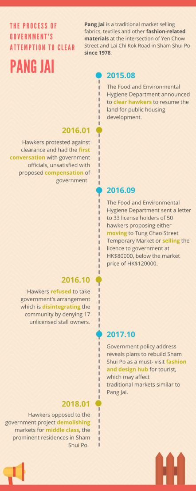

Being piled up with various colorful fabrics and clothes, with people crowded through the only narrow aisle, Yen Chow Street Hawker Bazaar, which is usually called “Pang Jai” by Hong Kong people, has gradually regarded as one of the distinctive symbols of Hong Kong local culture and people’s indelible memory.
Established in the 1970s, Pang Jai has existed in Sham Shui Po for 40 years during which it developed rapidly and had a maximum of 190 fabric shops inside.
Because of the booming growth and development of garment industry in Hong Kong at that time, Pang Jai became the most popular clothing material market with its diversity of merchandise, such as variegated cotton, linen, and even denim.
But most attractive part of Pang Jai is its affordable price. Fabrics would be sold at a lower price there, which turned it into people’s favorite market. People come here to buy cheap materials, and housewives would purchase fabrics for their children’s new clothes.
However, Pang Jai failed to maintain its healthy vitality in recent decades due to the decadence of traditional textile industry in Hong Kong and gradually lost its customers.
Post from RICOH THETA. - Spherical Image - RICOH THETA
Chan Yue-dung, 86, has been working in Pang Jai for more than 40 years and witnessed its establishment and development.
According to Chan, the clothing industry no longer exists in Hong Kong, and they have all moved to mainland which has lower-cost facilities and cheaper labor. Extremely cheap clothes from mainland flooded into Hong Kong, which was a massive strike to them.
“Only some university students majored in design or primary and middle school students who need to do some handcraft assignment will come and buy a small amount of fabric and textile at one go, so we don’t have much business,” Chan said.
“And now the government is suggesting that the fabric market should be removed, which makes the situation worse.”
Just as Chan said, during 40 years of operation, Pang Jai has experienced several times of forced clearance. After the tug of war between the government and hawkers, only about 50 merchants remained now.
In 2005, the Food and Environmental Hygiene Department claimed that they would call in the land for development plans. A merchant was injured when government enforced clearance and afterwards government terminated land acquisition for unlisted reasons.
A new round of clearance actions abruptly began in August of 2015. The Food and Environmental Hygiene Department announced to clear hawkers to resume the land for public housing development and relocate the hawkers to temporary market nearby, whose rent was unaffordable for hawkers.
Hawkers protested against the clearance several times after the announcement, arguing that the long history of Pang Jai had historical impacts and the unique characteristic of Sham Shui Po should be protected. The conversation between the government and hawkers hereafter was stuck in a stalemate with low efficiency.
Meanwhile, hawkers of Pang Jai put forward a civil plan for its further development, which reserved three blocks for hawkers to keep running their business. Besides, the fourth block would be exploited into a fashion resource center to provide enough creative space for young designers. A plan of building up a society of fashion communication in the fifth block for regular activities was also raised.
This plan won the silver prize of the Hong Kong Institute of Planners 2017 and the first Wendy Sarkissian Award in Australia. Wendy, the founder of this award, highly admired the creativity and motivation of hawkers and suggested the government should adopt people’s opinion to present the democracy in Hong Kong.
As time goes by, many of the hawkers eventually chose to leave the counters with their phone number and no longer stuck on this job. Only a part of merchants carry on their business every day to wait for very few customers.
Pang Jai is a memory of a generation in Hong Kong, and the 40-year’s development made it an irreplaceable part of the local culture. However, the avoidance of the government has caused hawkers’ dissatisfaction and a waste of resources.
Hawkers who earned a living in the bazaar for decades have no idea about where to go and what to do now. They are perplexed about the future of Pang Jai as well as their own lives.
“There is no point to fight at my age,” Chan said, “the only thing we can do now is to resign ourselves to our fate.”
Reported by ZHU Fangyao, WANG Xueyang, LIU Xiaohan, ZHAO Shuang.